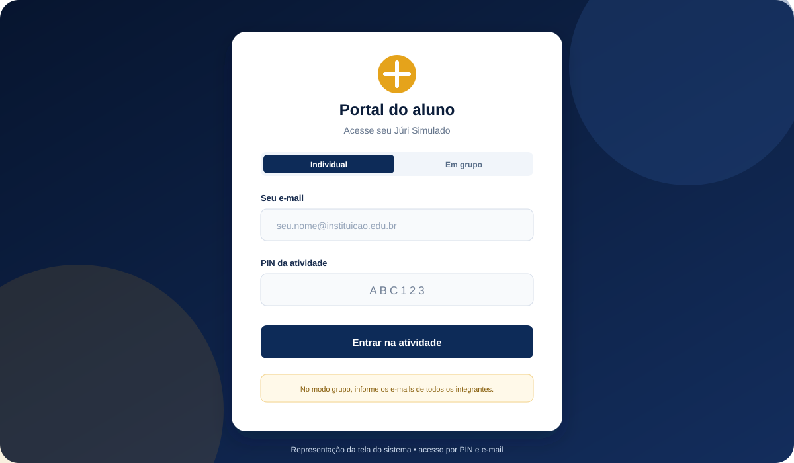
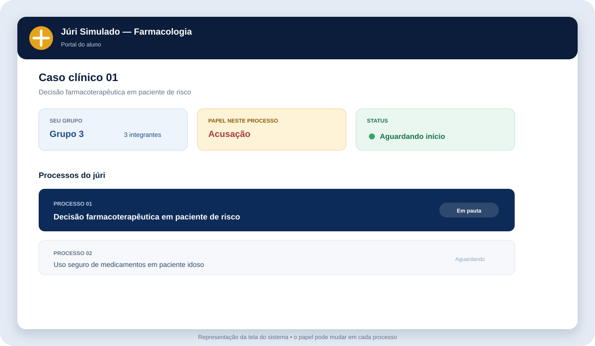
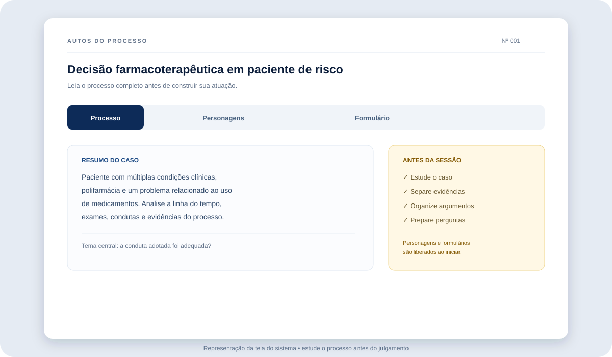
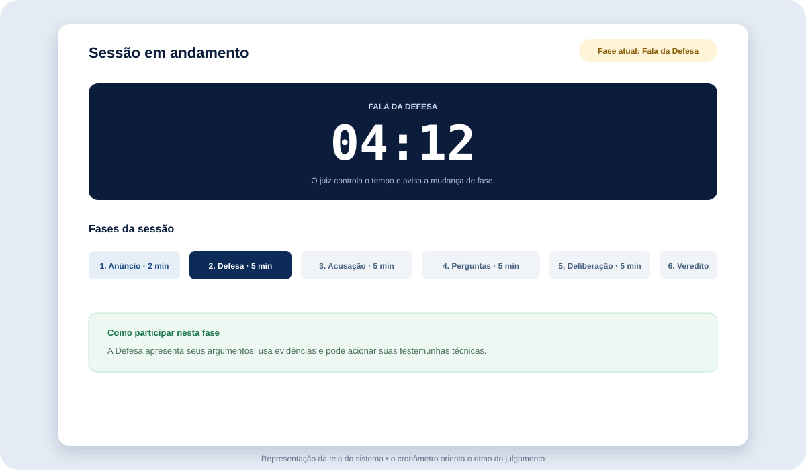
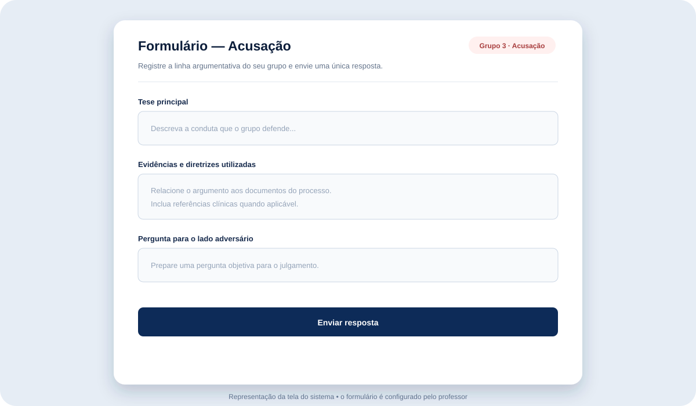
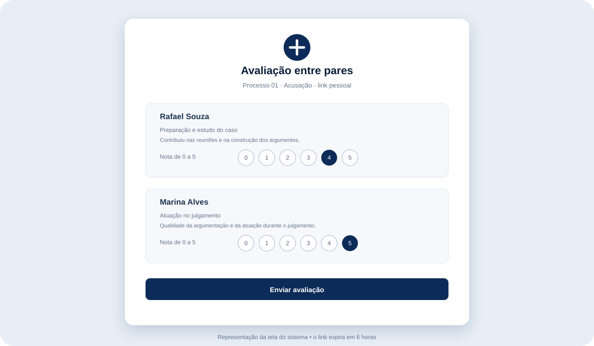
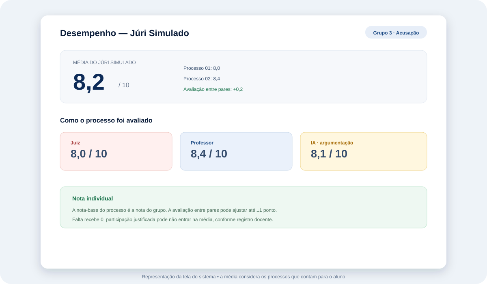

Entre no portal
Use o PIN e o e-mail cadastrado. O sistema identifica seu grupo, os processos e o papel atribuído.
Guia do aluno · módulo 02
Aqui você encontra o passo a passo para acessar o portal, estudar o processo, atuar como Acusação, Defesa ou Júri Técnico, acompanhar as fases e entender a composição da nota individual.
Antes de começar
É uma atividade de argumentação e julgamento clínico em formato de tribunal. A turma analisa um processo com prontuário, exames, linha do tempo, condutas e evidências. A partir desse material, os grupos defendem posições, questionam argumentos e tomam uma decisão técnica.
Você não precisa adivinhar informações nem inventar fatos. Leia os autos, identifique o problema central, selecione evidências e construa argumentos que possam ser sustentados pelo conteúdo do caso e por diretrizes clínicas pertinentes.
Use o PIN e o e-mail cadastrado. O sistema identifica seu grupo, os processos e o papel atribuído.
Leia o processo, acompanhe o cronômetro, participe da fase correspondente e registre as respostas do seu grupo.
Um integrante envia o formulário do grupo. Depois, cada participante recebe um link para avaliar os colegas.
Etapa 1
O acesso começa na tela de entrada do aluno. Você precisará do PIN informado pelo professor e do e-mail cadastrado no Júri Simulado.

Verifique maiúsculas, espaços, domínio do e-mail e o PIN. Se o e-mail não estiver cadastrado no grupo, o sistema não liberará o portal.
O juiz ou juíza entra por um painel próprio, com o nome cadastrado pelo professor. O aluno não inicia, pausa ou encerra as fases.
Etapa 2
Em cada processo, três grupos são distribuídos: Acusação, Defesa e Júri Técnico. Os demais grupos podem aguardar ou participar de outro processo. A distribuição pode rotacionar ao longo da atividade.

Apresenta a tese que questiona ou responsabiliza a conduta analisada no processo.
Apresenta a interpretação favorável à conduta ou à decisão clínica discutida.
Interroga, compara os argumentos e delibera com imparcialidade sobre as evidências.
Não prepare todos os processos do mesmo modo. Ao abrir cada caso, observe se seu grupo está como Acusação, Defesa ou Júri Técnico e adapte a preparação.
Etapa 3
Enquanto a sessão ainda não foi iniciada pelo juiz, você consegue ler e estudar o processo. Os personagens e os formulários só são liberados quando o processo começa.

Etapa 4
O juiz conduz a ordem das fases e controla o tempo. Você acompanha o cronômetro no portal, segue as instruções da fase atual e envia as respostas do seu papel quando o grupo estiver pronto.

O juiz apresenta o título, o resumo e o tema central que deverá ser respondido pelo júri.
A Defesa apresenta sua tese, pode usar testemunhas técnicas e deve organizar a exposição dentro do tempo.
A Acusação apresenta seus argumentos, evidencia os problemas da conduta e pode acionar testemunhas técnicas.
O Júri pode fazer até três perguntas, com no máximo duas para o mesmo grupo. As perguntas devem esclarecer pontos relevantes.
O Júri delibera em voz baixa, preenche sua ficha e escolhe um representante para anunciar o veredito com justificativa técnica.
O representante anuncia a decisão. O juiz registra o encerramento do processo e pode seguir para o próximo caso.
Respeite a ordem, escute o outro lado, mantenha a objetividade e use o tempo para sustentar uma linha de raciocínio. A qualidade do argumento é mais importante que a quantidade de informações.
O Júri não deve fazer perguntas genéricas ou repetidas. Pergunte para esclarecer evidências, riscos, coerência clínica e pontos que realmente influenciam o julgamento.
Etapa 5
Quando o juiz inicia o processo, aparecem as abas disponíveis para o seu papel: Processo, Personagens e Formulário. O conteúdo dos formulários é configurado pelo professor e pode variar entre atividades.
Quando houver personagens, eles são profissionais convocados pela Acusação ou pela Defesa para prestar depoimento técnico. A testemunha técnica não é o réu. Leia as instruções e use o personagem de modo estratégico, sem inventar informações fora do que foi fornecido.
O formulário é compartilhado pelo grupo. Um integrante envia a resposta e o sistema registra que aquele grupo concluiu o envio para o processo. Depois do envio, os demais integrantes não devem reenviar o mesmo formulário.

A Acusação e a Defesa são avaliadas também pela postura processual, clareza, uso do tempo, testemunhas e qualidade da argumentação durante o julgamento. O formulário registra a preparação e os argumentos; a sessão mostra como o grupo os sustenta.
Etapa 6
Cada processo recebe uma nota de 0 a 10. A nota do grupo é usada como base para os integrantes presentes e pode receber um ajuste individual pela avaliação entre pares.
| Componente | Como funciona | Escala |
|---|---|---|
| Juiz | Avalia Acusação e Defesa em rito processual, clareza, postura, uso pertinente de testemunhas e cumprimento do tempo. A nota é a média dos critérios respondidos. | 0–10 |
| Professor | Avalia domínio do caso, evidências e diretrizes, raciocínio clínico, argumentação, refutação, comunicação, trabalho em equipe e coerência com o processo. | 0–10 |
| IA · Acusação/Defesa | Quando gerada pelo professor, analisa coerência com o processo, uso de evidências, força argumentativa e alinhamento com o que foi apresentado pelo Júri. | 0–10 |
| IA · Júri Técnico | O grupo de jurados recebe uma nota própria com base na capacidade de interrogação e no julgamento justo das provas, argumentos e contra-argumentos. | 0–10 |
| Avaliação entre pares | Aplica um ajuste individual de até 1 ponto para mais ou para menos, considerando preparação, atuação no julgamento e colaboração. | −1,0 a +1,0 |
Para Acusação e Defesa, a nota do grupo é a média das avaliações disponíveis do juiz, professor e IA. Se uma fonte ainda não tiver nota, o sistema usa as avaliações disponíveis. O resultado fica limitado entre 0 e 10.
Quando houver mais de um processo, o sistema calcula a média das notas individuais dos processos que contam para você. Assim, a nota final do Júri Simulado considera sua participação ao longo da atividade.
O professor pode registrar presente, falta ou não participação justificada. Falta recebe nota 0; participação justificada pode ficar fora da média. Também pode haver ajuste individual manual do professor.
Uma argumentação tecnicamente sólida, coerente com os autos e respeitosa vale mais do que uma fala agressiva ou uma conclusão sem evidência. No Júri Técnico, imparcialidade e qualidade das perguntas são centrais.
Depois de cada processo
Depois que o juiz encerra um processo, cada integrante de um grupo com mais de uma pessoa recebe um link pessoal por e-mail para avaliar os colegas daquele processo específico e do papel que o grupo desempenhou.

Preparação e estudo: participou das reuniões e da construção dos argumentos ou perguntas. Atuação: qualidade da argumentação ou, no caso do Júri, das perguntas e da imparcialidade. Colaboração: postura respeitosa e colaborativa do início ao fim.
O sistema calcula a média das três notas dadas por cada avaliador e depois a média entre avaliadores. O ponto neutro é 2,5; a média pode gerar ajuste de até ±1,0 ponto. Se ninguém responder, o ajuste fica em 0.
Fórmula: ((média − 2,5) ÷ 2,5) × 1,0
A avaliação entre pares é individual, anônima para os colegas avaliados e vinculada ao processo e ao papel daquele grupo. Não avalie alguém com base em outro processo.
Depois da correção
Depois que o professor registra ou libera as avaliações, você poderá consultar o desempenho do Júri Simulado na área de resultados ou desempenho do aluno.

Compare a nota com os critérios: rito, domínio do caso, evidências, argumentação, refutação, comunicação, equipe, perguntas e julgamento justo. Use o feedback para escolher o que praticar na próxima atividade.
Se o resultado ainda não estiver disponível, aguarde o professor concluir as avaliações. A correção do grupo pode depender do envio dos formulários e da geração das avaliações de IA.
Antes, durante e depois
Use esta lista para verificar se você está pronto para o julgamento.
Dúvidas frequentes
Sim, em processos diferentes. A distribuição é feita por processo e pode rotacionar entre Acusação, Defesa e Júri Técnico. O portal mostra qual é o seu papel em cada caso.
Você pode ler e estudar o processo. Os personagens e os formulários são liberados quando o juiz inicia a sessão do processo.
O juiz ou juíza controla o cronômetro, pausa quando necessário e avança as fases. Os alunos acompanham a fase atual no portal e devem seguir as orientações exibidas.
Não. O formulário é enviado uma vez por grupo para aquele processo. Organizem-se para que uma pessoa faça o envio depois de todos revisarem a resposta.
O professor registra a situação. Falta recebe nota 0 para o processo; uma participação justificada pode ser marcada como não participante e ficar fora da média, conforme a decisão docente.
Sem avaliações recebidas, o ajuste entre pares fica em 0. Mesmo assim, a etapa faz parte da dinâmica da atividade em grupo e deve ser respondida dentro do prazo.
A nota-base é compartilhada pelo grupo, mas a avaliação entre pares pode acrescentar ou retirar até 1 ponto para cada integrante. O professor também pode registrar uma situação individual.
Não tente corrigir por conta própria. Faça uma captura da tela, anote o processo e procure o professor antes de enviar qualquer formulário.